Top Scientific Breakthrough • Convergence of The Future
|
A.I. · Robotics · Biotech · Space · Energy · Neuro
All
AI
Robotics
Biotech
Space Tech
Energy
Neuroscience
Load more from the archive ↓
— End of Archive —